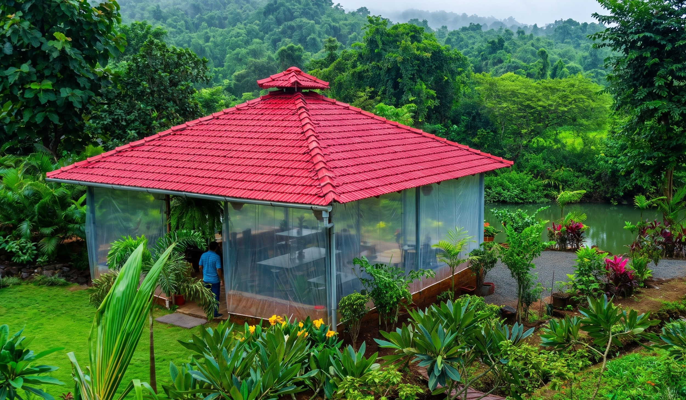
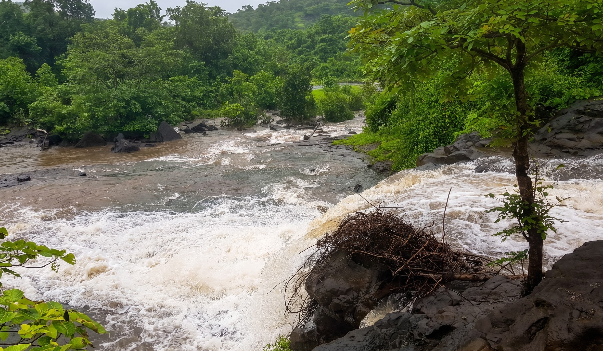
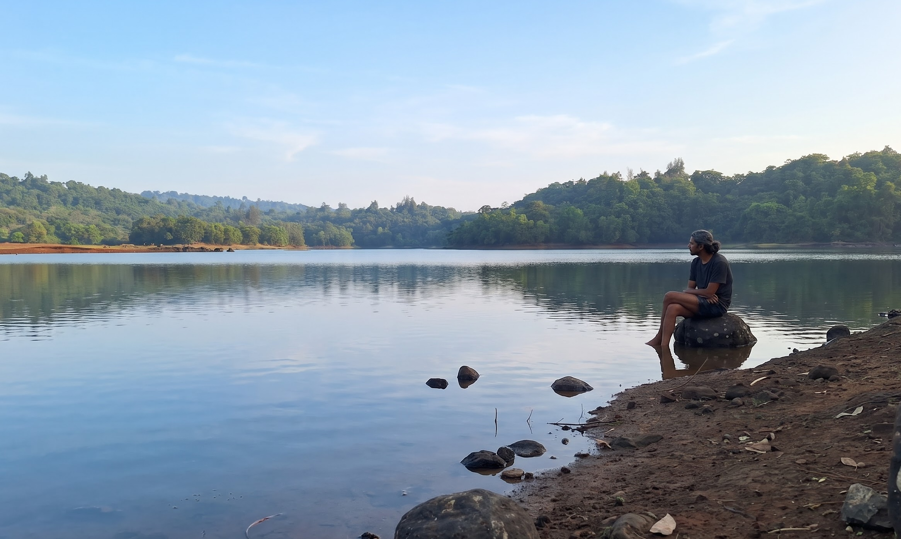

Privacy, not crowds.
Five bedrooms across two villas, with generous open space between moments.
The Property
Six and a half acres of open, living landscape in Raigad—with only two villas across the entire property.
Scroll to exploreA little room around you
Spread out, slow down, and experience nature without the crowds or bustle of a typical resort. Here, you decide what the day looks like.

By the Bruk
By the Bruk is Breathe Woods’ on-site restaurant, serving breakfast, lunch, and dinner in the heart of the property.
Menus draw on local Maharashtrian cuisine and freshly prepared seasonal ingredients, with vegetarian, Jain, and non-vegetarian options available.
Explore dining

Around the grounds
You may spot geese wandering through the gardens or hens going about their day—small, unplanned moments that make the land feel lived in.
They roam at their own pace, so sightings are never guaranteed.

Monsoon
Natural streams move through the property, the forest turns a deeper shade of green, and rocky cascades become seasonal waterfalls. Seasonal and dependent on rainfall and local conditions.

Winter & summer
In drier months, spend an evening by the nearby lake, take a refreshing swim with life jackets supplied by the property, or watch the sun settle over the surrounding hills. Subject to local conditions and on-ground guidance.
Five bedrooms across two villas, with generous open space between moments.
What flowers, fruits, streams and skies are doing changes with the season.
From Mumbai and Pune, far enough to slow down and close enough for a weekend.
Growing with the land
Six and a half acres give us room to grow gently, while keeping the woods at the heart of the stay.
Future phaseThe swimming pool and petting zoo shown on this site plan are planned for a future phase and are not available today.